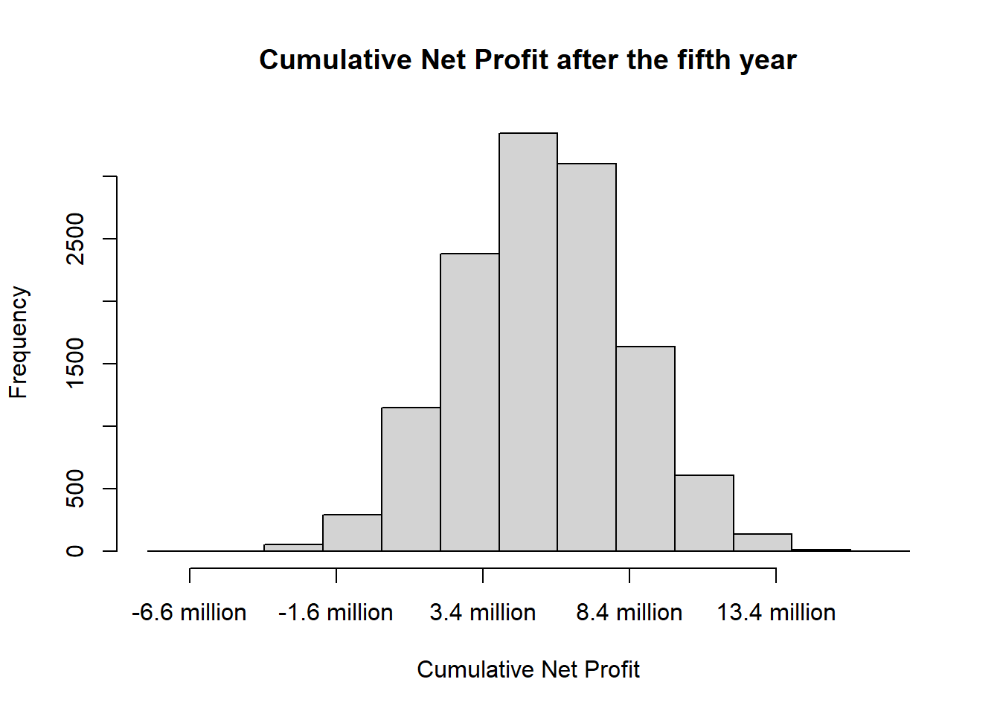

8 Simulation
This Chapter is primarly based on
Ritzman, L., Krajewski, L., Malhotra, M. & Klassen, R. (2013). Foundations of Operations Management. Supplement G: Simulation. Pearson.
Kunnumkal, S. (2019). Simulation. In: Pochiraju, B. & Seshadri, S. (2019). Essentials of Business Analytics. Pages 305-336. International Series in Operations Research and Management Science. Springer.
You can download the corresponding R-Code here
8.1 Introduction
Simulation is one of the most widely used quantitative approaches to decision-making. It is the act of reproducing the behavior of a system using a model that describes the processes of the system. Once the model has been developed, the analyst can manipulate certain variables to measure the effects of changes on the operating characteristics of interest.
Through the reconfiguration and experimentation with the model of the system, properties concerning the behavior of the actual system or its subsystem can be inferred. In its broadest sense, simulation is a tool to evaluate the performance of a system, existing or proposed, under different configurations of interest and over long periods of real time.
Monte Carlo simulations are used to model the probability of different outcomes in a process that cannot easily be predicted due to the intervention of random variables. The simulation process includes data collection, random-number assignment, model formulation, and analysis.
Let’s illustrate this better with an example.
8.2 Covid-19 Vaccine Development
We consider a pharmaceutical company, which is producing medicine, including different pills and vaccines. The company is called Pharma AG. Pharma AG has put a lot of effort into the research and development of a new COVID-19 vaccine. However, they are unsure whether to proceed with the development of the vaccine. A lot of investment is required before the company will make its first revenues. Further, they do not yet know how high the demand will be. Although Pharma AG is a locally operating company, global companies such as BioNTech/Pfizer have already brought vaccines to the local market.
As for many other business areas, these possibilities are difficult to test in practice. This is where simulation comes into play. The investment possibility is modeled in a simulation to test its applicability. Simulation is applied in business to model different business scenarios which are influenced by varying demand. Other application areas are manufacturing operations, inventory management, marketing, or service operations. Using a simulation model for service operations like queueing models, the analyst actually generates customer arrivals, puts customers into waiting lines, selects the next customer to be served by using some priority discipline, serves that customer, and so on. The model keeps track of the number in line, waiting time, and the like during the simulation. It further calculates the averages and variances at the end. Simulation allows great flexibility in modeling complex systems. Experimental conditions can be controlled and alternatives can be compared.
The adequate design and analysis of simulation experiments are essential, as is the number of simulation-runs. Almost all simulations are therefore performed on a computer, where 1,000 or more simulation runs are easy to do. For the following simulation we will also use 1,000 simulation runs.
#1000 simulation runs
n <- 10008.3 Developing a New Product
Suppose that Pharma AG have discovered a potential breakthrough in the laboratory and needs to decide whether to go forward to conduct clinical trials and seek FDA approval to market the vaccine. Since there are several uncertain input parameters, they decide to create and run a simulation model.
The main cost driver for vaccine development are total R&D costs. Pharma AG don’t know the exact R&D costs, but they will equally likely sum up to a total of somewhere between $600 million and $800 million.
RDcost <- runif(n, 600000000, 800000000)The costs for clinical trial are also a non-neglectable key cost driver during vaccine development. From past vaccine developments, the company knows that the costs for clinical trial will be normally distributed with a mean of $150 million. The variance of the costs is estimated to be at $900 trillion^2.
clinicaltrialcost <- rnorm(n,150000000,30000000)Since there are already COVID-19 vaccines of other pharmaceutical companies on the market, Pharma AG must calculate with a smaller market share. The current local market size is estimated to be normally distributed with a mean of 2 million people and a standard deviation of 0.4 million people. However, during the next years the market size is estimated to grow each year. The growth rate follows a triangular distribution between 2% and 6% with modus at 3%. In the first year, Pharma AG estimate gaining an 8% market share, which is anticipated to grow each year. The annual market share growth rate also follows a triangular distribution with a minimum of 15% and a maximum of 25%. We use the package EnvStats for the triangular distribution in R.
marketshare1 <- 0.08
marketsize1 <- round(rnorm(n,2000000,400000),0)
marketgrowthfactor2 <- rtri(n, 0.02, 0.06, 0.03) #year 2
marketsharegrowthrate2 <- rtri(n, 0.15, 0.25, 0.2)
marketgrowthfactor3 <- rtri(n, 0.02, 0.06, 0.03) #year 3
marketsharegrowthrate3 <- rtri(n, 0.15, 0.25, 0.2)
marketgrowthfactor4 <- rtri(n, 0.02, 0.06, 0.03) #year 4
marketsharegrowthrate4 <- rtri(n, 0.15, 0.25, 0.2)
marketgrowthfactor5 <- rtri(n, 0.02, 0.06, 0.03) #year 5
marketsharegrowthrate5 <- rtri(n, 0.15, 0.25, 0.2)A monthly agreement is anticipated to generate revenue of $130 while incurring variable costs for distribution of the vaccine of $40.
# Deterministic input parameters
revenuepm <- 130 #revenue per month and unit
varcostpm <- 40 #variable costs per month and unit8.3.1 Simulation Model
We will set up the simulation model for Pharma AG for five years. We have already defined the input distribution for the five uncertain inputs. So now, we will add the calculations.
# Total Project Costs
projectcost <- RDcost + clinicaltrialcost
# Market Size per Year
marketsize2 <- marketsize1*(1+marketgrowthfactor2)
marketsize3 <- marketsize2*(1+marketgrowthfactor3)
marketsize4 <- marketsize3*(1+marketgrowthfactor4)
marketsize5 <- marketsize4*(1+marketgrowthfactor5)
# Market Share per Year
marketshare2 <- marketshare1*(1+marketsharegrowthrate2)
marketshare3 <- marketshare2*(1+marketsharegrowthrate3)
marketshare4 <- marketshare3*(1+marketsharegrowthrate4)
marketshare5 <- marketshare4*(1+marketsharegrowthrate5)
# Sales
sales1 <- marketsize1 * marketshare1
sales2 <- marketsize2 * marketshare2
sales3 <- marketsize3 * marketshare3
sales4 <- marketsize4 * marketshare4
sales5 <- marketsize5 * marketshare5
# Annual Revenue
revenue1 <- sales1 * revenuepm*12
revenue2 <- sales2 * revenuepm*12
revenue3 <- sales3 * revenuepm*12
revenue4 <- sales4 * revenuepm*12
revenue5 <- sales5 * revenuepm*12
# Annual Cost
cost1 <- sales1 * varcostpm*12
cost2 <- sales2 * varcostpm*12
cost3 <- sales3 * varcostpm*12
cost4 <- sales4 * varcostpm*12
cost5 <- sales5 * varcostpm*12
# Annual Profit
profit1 <- revenue1 - cost1
profit2 <- revenue2 - cost2
profit3 <- revenue3 - cost3
profit4 <- revenue4 - cost4
profit5 <- revenue5 - cost5We further calculate the cumulative net profit for the five years as this is the output of the simulation model.
# Cumulative Net Profit
cumnetprofit1 <- profit1 - projectcost
cumnetprofit2 <- cumnetprofit1 + profit2
cumnetprofit3 <- cumnetprofit2 + profit3
cumnetprofit4 <- cumnetprofit3 + profit4
cumnetprofit5 <- cumnetprofit4 + profit5By running the simulation 1,000 times we get a more accurate number of the cumulative net profits compared to running the simulation only once or twice. By taking the mean of all 1,000 calculated cumulative net profits, we get a value which is likely to be realistic.
Using this simulation, we can draw inferences about the probability of successfully investing into the COVID-19 vaccine development. The investment would be successful if the cumulative net profit after some years was positive, so that no losses were generated. Thus, we calculate the probability that the cumulative net profit after the third year is positive and illustrate it with a histogram.
mean(cumnetprofit3)## [1] -196094454For the cumulative net profit after the third year we get a negative average. The histogram below shows, that most of the profits are negative and only a little share is above zero.
hist(cumnetprofit3, xlab = "Cumulative Net Profit",
main = "Cumulative Net Profit after the third year", xaxt = "n")
axis(side=1, at=seq(min(cumnetprofit3), max(cumnetprofit3), by=500000000), las=1,
labels=paste(round(seq(min(cumnetprofit3), max(cumnetprofit3),
by=500000000)/100000000,1), "million", sep=" "))
abline(v = 0, col = "darkred", lwd = 2)And indeed, when computing the probability of the cumulative net profit after the third year, we get a low percentage of around 10 %.
pnorm(0, mean(cumnetprofit3), sd(cumnetprofit3), lower.tail = FALSE)## [1] 0.08904253Let’s also calculate the mean cumulative net profit after the fifth year to see whether the mean profit is positive then.
# Mean Cumulative Net Profit after the fifth year
mean(cumnetprofit5)## [1] 549559811The R output shows that the mean cumulative net profit after the fifth year is positive. Let’s also show its distribution visually with a histogram.
hist(cumnetprofit5, xlab = "Cumulative Net Profit",
main = "Cumulative Net Profit after the fifth year", xaxt = "n")
axis(side=1, at=seq(min(cumnetprofit5), max(cumnetprofit5), by=500000000), las=1,
labels=paste(round(seq(min(cumnetprofit5), max(cumnetprofit5),
by=500000000)/100000000,1), "million", sep=" "))To be even more confident about the investment decision, we can compute a confidence interval.
z <- round(qnorm(0.975),2)
(upper.bound <- mean(cumnetprofit5) + z * (sd(cumnetprofit5)/sqrt(n)))## [1] 567393372(lower.bound <- mean(cumnetprofit5) - z * (sd(cumnetprofit5)/sqrt(n)))## [1] 531726251The 95 % interval for the mean cumulative net profit after the fifth year shows us, in which range the profit will be in 95 % of the cases.
8.3.2 Number of Simulation Runs
After setting up a simulation model, we are interested in how many simulation runs are required to obtain statistically reliable results. Specifically, we want to choose the appropriate sample size so that the mean cumulative net profit after the fifth year lies within a $10,000,000 interval in 95% of the cases. For that we compute the following.
# sample size so that the mean cumnetprofit5 lies within a 95% confidence interval
z <- round(qnorm(0.975),2)
# the mean should lie within $10,000,000 in 95% of the cases
A <- 10000000/2
n <- round((z^2 * sd(cumnetprofit5)^2) / A^2, 0)
n## [1] 12721Of course we want to know now what the new mean cumulative net profit is after the fifth year. For that, one just needs to re-run the above explained code.
## [1] 548676504
We see that the newly calculated cumulative net profit after the fifth year is similar to the one first calculated. However, we can be more confident about this mean profit as we ran more calculations.
8.4 Newsvendor Model
Pharma AG has already negotiated contracts with their buyers for the beginning of 2021. As the research and development for the Covid-19 vaccine are delayed, Pharma AG decides to buy some vaccine doses for the first month of 2021. The company expect their product to be ready for sale from February onwards. So, they only need to buy doses for one month in order to meet their customers’ requests. As the durability of vaccine is very short, the excess units, i. e. the ones which were not sold and are leftover at the end of the month, need do be disposed. The disposal costs the company $5 per unit. However, if they buy too less doses, they have to pay penalty fees of $100 per missing unit.
Not all contracts have been signed yet. So, the exact demand is not yet known but depends on the number of contracts to be signed. The possible demand for January 2021 can be described by the following discrete probability table.
| Possible Demand | 10,000 | 12,000 | 13,000 | 14,000 | 15,000 | 16,000 | 17,000 | 18,000 |
|---|---|---|---|---|---|---|---|---|
| Probability | 5 % | 10 % | 15 % | 17 % | 18 % | 15 % | 13 % | 7 % |
To write that table into R we use the following code.
poss.demand <- c(10000, 12000, 13000, 14000, 15000, 16000, 17000, 18000)
probabilitiy <- c(0.05,0.1,0.15,0.17,0.18,0.15,0.13,0.07)Pharma AG can either buy
- 15,000 doses
- 18,000 doses or
- 11,000 doses
of a Covid-19 vaccine. They have to order the vaccine doses already before the exact demand is known.
#order either 15,000, 18,000, or 11,000 doses
order1 <- 15000
order2 <- 18000
order3 <- 110008.4.1 Demand Sampling
Before we define a simulation model we will sample the demand data for the first month. For that, the provided possible demand and the according probabilities are used. For the simulation we use the calculated number of simulation runs from above, which is around 12,600.
demand <- sample(poss.demand, n, TRUE, probabilitiy)Further, we plot a histogram of the simulated demand to check its distribution.
hist(demand,6, freq = FALSE, ylim = c(0,0.0002))
curve(dnorm(x,mean(demand),sd(demand)), col="darkblue", lwd=2, add=TRUE, yaxt="n")mean(demand)## [1] 14633.68The mean demand is slightly lower than 15,000 units.
8.4.2 Order Simulation Model
Now we want to determine which of the three orders Pharma AG should place to maximize their average profit for the month. Therefore, we develop a simulation model.
The revenue can be calculated by multiplying the number of sold doses with the revenue per month. However, the revenue is subject to several costs. The variable costs are determined by multiplying the number of sold units with the variable costs per month (see task 1). In addition, the disposal costs and the penalty costs must be considered. The profit for the month then is the revenue less the variable costs, the penalty costs, and the disposal costs.
To run the model n times for each order option we use a for-loop from 1 to n.
Newsvendor <- function(demand, order){
d <- 5 #disposal cost
p <- 100 #penalty cost
revenue <- rep(NA, n)
shortage <- rep(NA, n)
leftover <- rep(NA, n)
sold <- rep(NA, n)
cost <- rep(NA, n)
for (t in 1:n) {
if (order > demand[t]){
sold[t] <- demand[t]
revenue[t] <- sold[t] * revenuepm
cost[t] <- sold[t] * varcostpm
shortage[t] <- 0
leftover[t] <- order - sold[t]
}else{
sold[t] <- order
revenue[t] <- sold[t] * revenuepm
cost[t] <- sold[t] * varcostpm
shortage[t] <- demand[t] - sold[t]
leftover[t] <- 0
}
}
# SAVE RESULTS OF EACH RUN
Simulation.data <- data.frame(
Demand = demand,
Sold = sold,
Revenue = revenue,
VarCost = cost,
Shortage = shortage,
Leftover = leftover,
Disposal.Cost = leftover * d,
Penalty.Cost = shortage * p
)
Simulation.data$Profit <- Simulation.data$Revenue
- Simulation.data$Disposal.Cost
- Simulation.data$Penalty.Cost
- Simulation.data$VarCost
return(mean(Simulation.data$Profit))
}With th following code we can output the probable profit when ordering 15,000, 18,000, and 11,000 units.
print(Newsvendor(demand, order1)) #Profit when ordering 15,000 doses## [1] 1820184print(Newsvendor(demand, order2)) #Profit when ordering 18,000 doses## [1] 1902378print(Newsvendor(demand, order3)) #Profit when ordering 11,000 doses## [1] 1423562As one can see, to order 11,000 units is the most profitable.